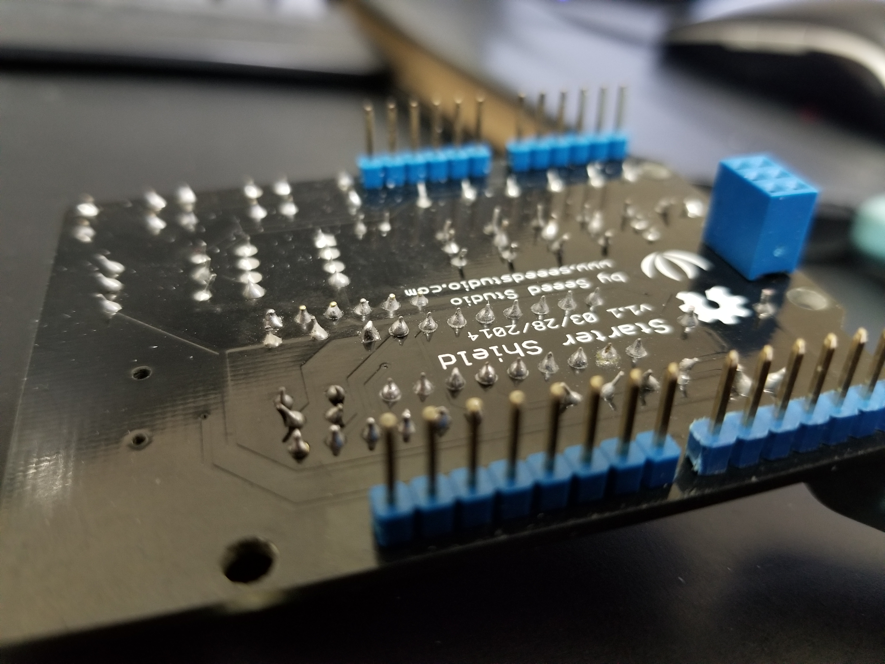
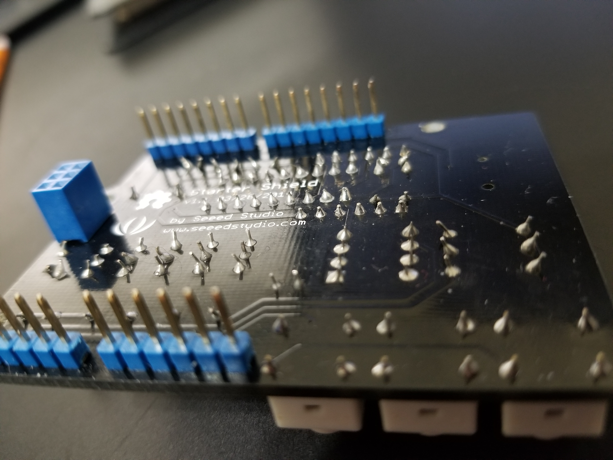
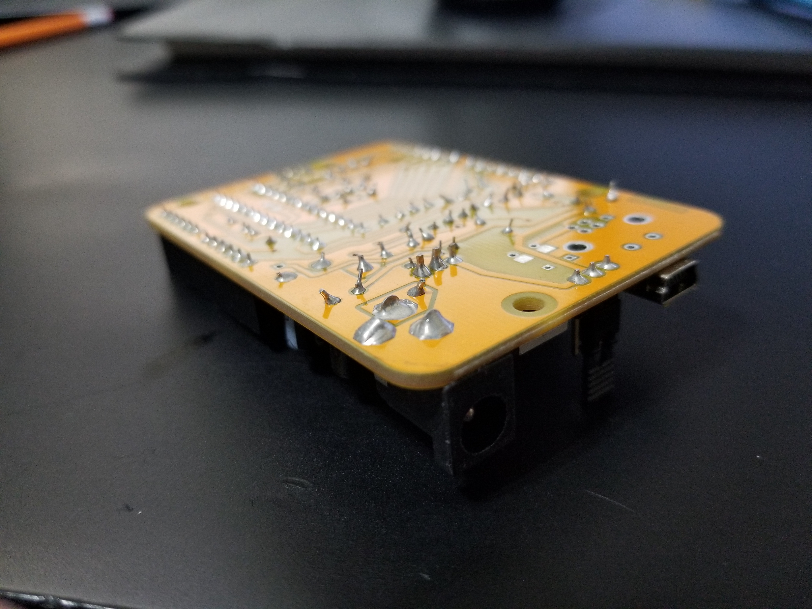
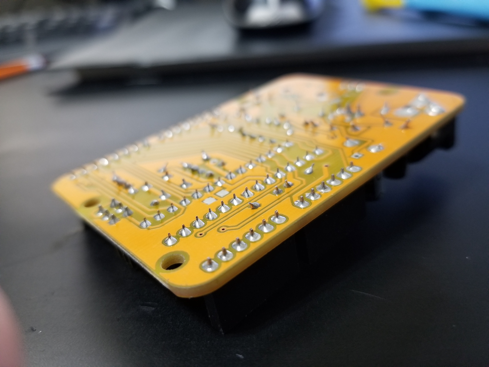
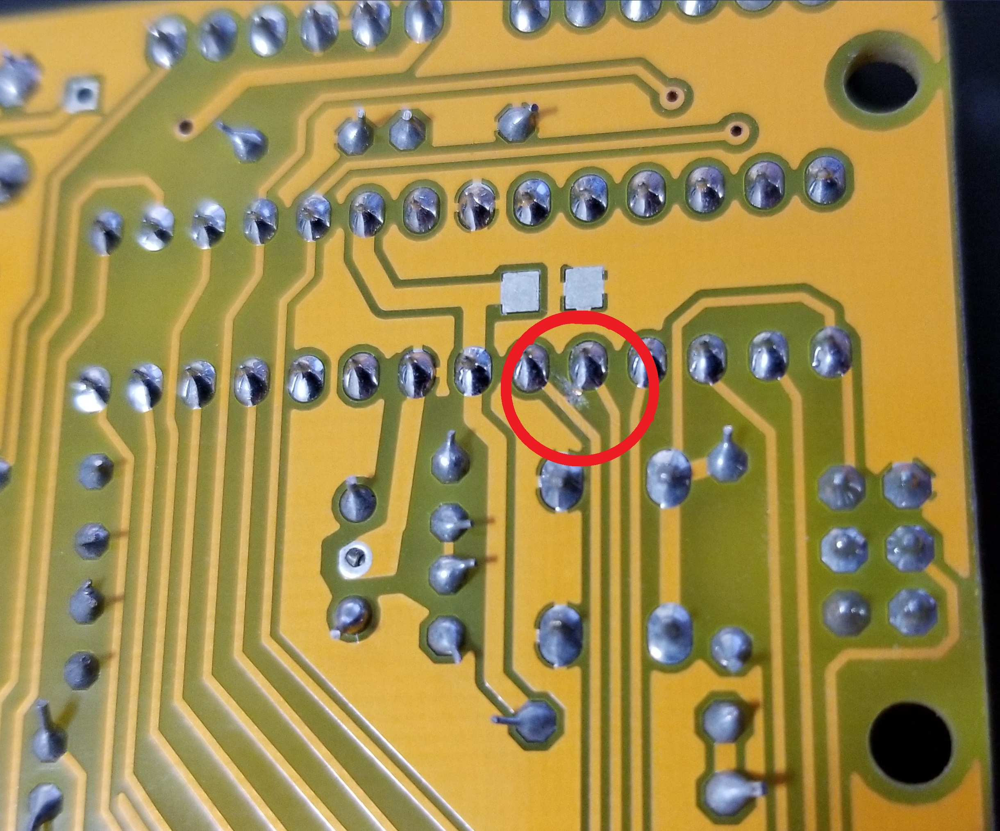
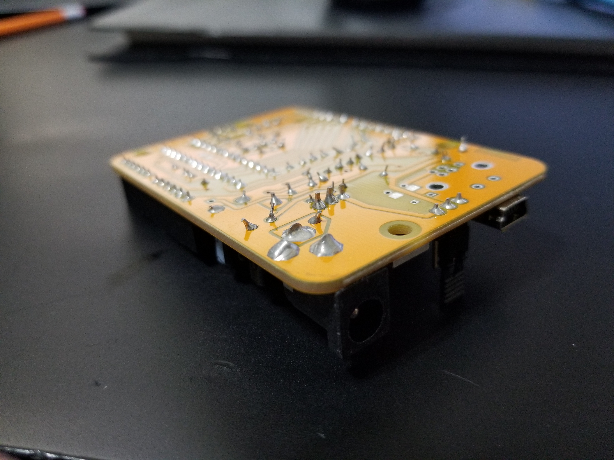
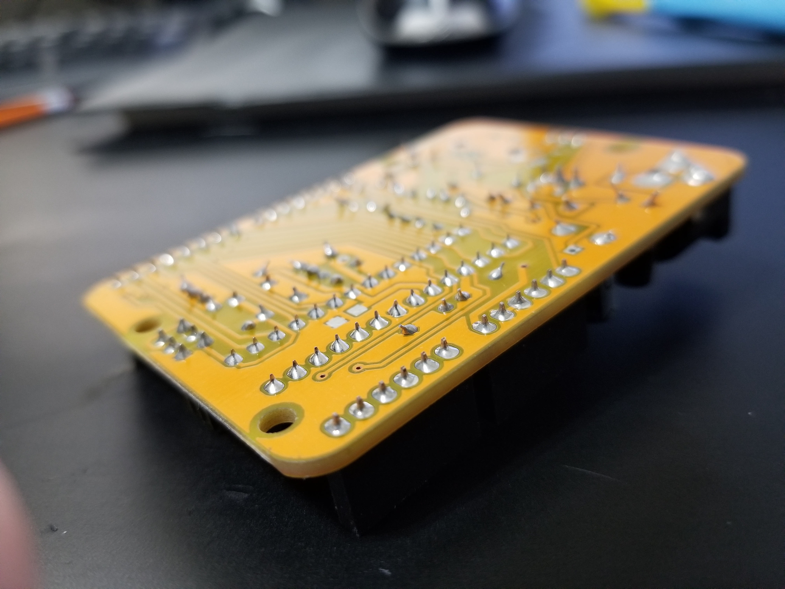
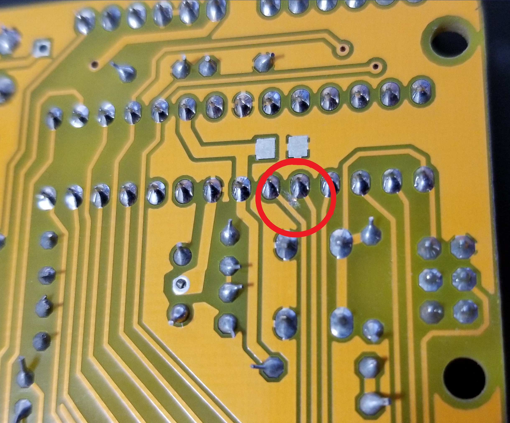

Above is a Voltage regulator and divider
 Above is an Arduino multifunction shield
 





In a red circle on the picture above you can see a scratched out piece of copper trace. After finishing soldering this Freeduino (compatible with Arduino software/hardware, expect cheaper) the teacher tested the board with a program, and it did not work. After re-soldering the board and it still not working my teacher examined the board. Eventually he found an extra bit of copper etching connecting these two pins that was not present on other boards. My teacher scratched it out and tried again but it had killed the chip.